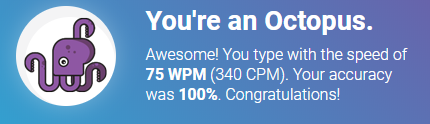

Living that ortho life
Whelp. It's been about a month and a half since I finished my build of the Iris which is my main keyboard at work. Today I think it's safe to say I've officially adopted (adapted to?) the ortho life:

Ok, ok, I'm not the fastest typer, but I think I'm above average and it's nice to be back up to my speed! Switching to an ortholinear keyboard was a bit more challenging than I expected. Even though it's still qwerty, the alignment makes a massive difference and changing 20+ years of muscle memory was a real challenge!
Now I just have to practice using staggered and ortholinear keyboards more frequently so I don't stuble as much when I switch back and forth. #keebstruggles.